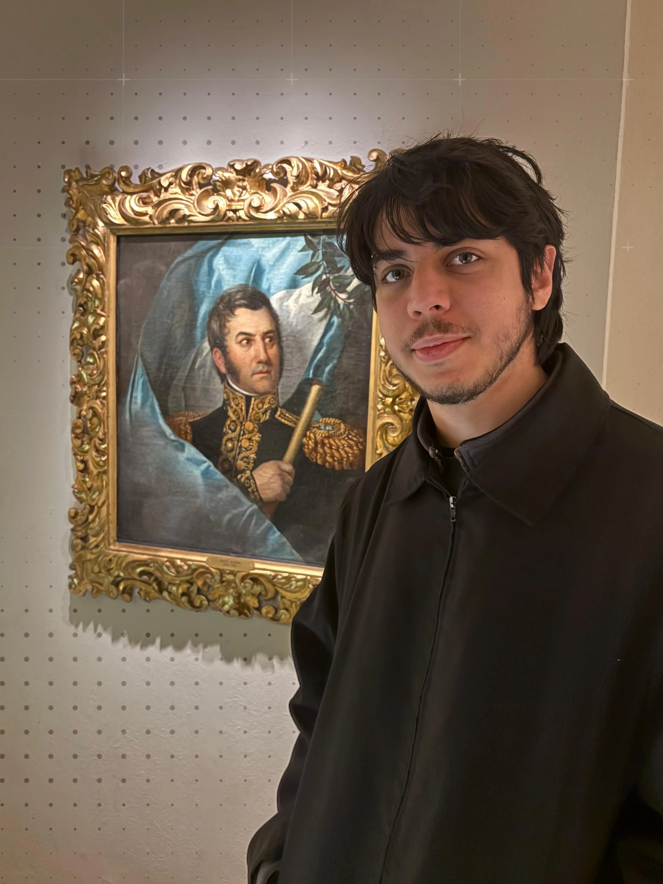

Einige Projekte, die zeigen, wie ich arbeite.
Andrés Rieznik
Kommunikationsberatung und Content-Produktion mit einem Physiker und Neurowissenschaftler, der auf Lernen spezialisiert ist, auf Instagram, TikTok und YouTube.
Strategie · Produktion · Schnitt · Formatentwicklung · Kanäle
Camila Perochena
Schnitt und Anpassung historischer und politischer Inhalte für soziale Medien, basierend auf Auftritten in Streaming-Formaten und im Fernsehen.
Abuelas de Plaza de Mayo
Ich habe bei Abuelas de Plaza de Mayo (Großmütter der Plaza de Mayo) im Bereich Presse und Öffentlichkeitsarbeit mitgewirkt, wo ich den TikTok-Kanal von Grund auf aufgebaut und betreut habe, mit eigener Produktion und Arbeit mit Archivmaterial.
Emilse Garzón
Zwischen Dezember 2024 und März 2025 habe ich Emilses Auftritte in Livestreams und anderen Formaten bearbeitet und daraus Reels zu künstlicher Intelligenz, Cybersicherheit, Politik und Technologieregulierung produziert.
Diese Arbeit lag mir auch persönlich nahe, wegen meines Interesses an der Schnittstelle von Technologie und Politik. Ein gutes Beispiel ist Las Malvinas Argentinas según ChatGPT, ein Beitrag darüber, wie ein KI-Tool auf eine von Geschichte, Souveränität und Politik geprägte Frage antwortet.
María Roca
Ich habe Auftritte von Dr. María Roca, Koordinatorin für Community-Outreach bei INECO, bearbeitet und daraus kurze Videos zu Neurowissenschaften, Gehirngesundheit und kognitivem Wohlbefinden produziert.
Ihre Beiträge behandelten Themen mit starkem Alltagsbezug wie Gedächtnis, Gewohnheiten, Altern und Gehirngesundheit — eine Arbeit, die eng mit meinem Interesse an Neurowissenschaften verbunden war.
Kontakt
Hier findest du meine Kontaktmöglichkeiten.

Über mich →